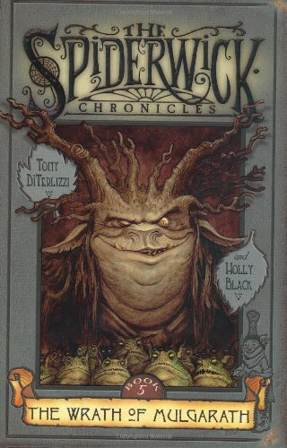
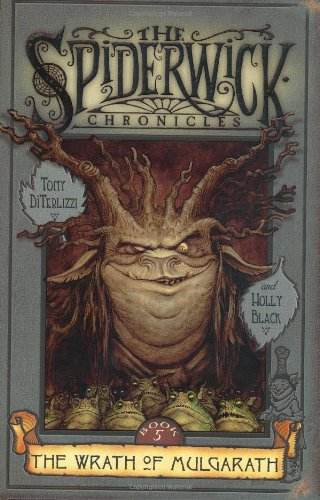

FREE BOOK
O LUGAR ONDE AS PALAVRAS GANHAM
FORMAS E AS IDEIAS VIRAM REALIDADE
O LUGAR ONDE AS PALAVRAS GANHAM
FORMAS E AS IDEIAS VIRAM REALIDADE
 


Um derrame cerebral deixa Anthony Spencer, um multimilionário egocêntrico, em coma. Quando "acorda", ele se vê em um mundo surreal habitado por um estranho, que descobre ser Jesus, e por uma idosa que é o Espírito Santo. À sua frente se descortina uma paisagem que lhe revela toda a mágoa e a tristeza de sua vida terrena. Jamais poderia ter imaginado tamanho horror. Debatendo-se contra um sofrimento emocional insuportável, ele implora por uma segunda chance. Sua prece é ouvida e ele é enviado de volta à Terra, onde viverá uma experiência de profunda comunhão com uma série de pessoas e terá a oportunidade de reexaminar a própria vida. Nessa jornada, precisará "enxergar" através dos olhos dos outros e conhecer suas visões de mundo, suas esperanças, seus medos e seus desafios. Na busca de redenção, Tony deverá usar um poder que lhe foi concedido: o de curar uma pessoa. Será que ele terá coragem de fazer a escolha certa?

Quais são as chances que a gente tem de quebrar a cara? Bom, se olhar para a história da humanidade, vai ver que são gigantes. Mas não precisa ir tão longe: olhe pra sua própria vida e perceba como algumas coisas tornam essa possibilidade ainda maior. Quebrar a cara muitas vezes é ir pelo caminho errado, tomar decisões ruins, perder tempo com o que não importa, comer comida vencida, ouvir música ruim, ler livros piores, repetir de ano, e a pior de todas: acreditar em mentiras.

UMA COLETÂNEA DE LIVROS QUE CONTA A HISTÓRIA ENTRE OS HUMANOS E DEUS, ONDE EM UM PERIODO VIVIAM JUNTOS EM HARMONIA, MAS EM CERTO MOMEMENTO O HOMEM TRAIU DEUS POR MEIO DO PECADO E HOUVE UMA SEPARAÇÃO. DEUS APAIXONADO PELA SUA CRIAÇÃO TRAÇA UM PLANO PARA RESGATAR OS HUMANOS DO CONDENAÇÃO ETERNA E TRAZE-LOS DE VOLTA PARA O SEU REINO E ENTÃO VIVEREM JUNTOS ETERNAMENTE.